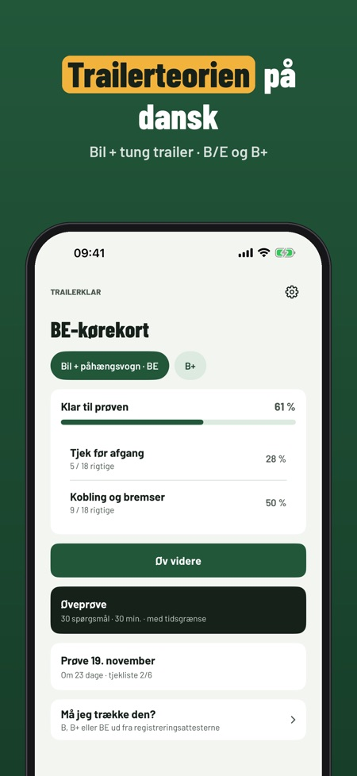
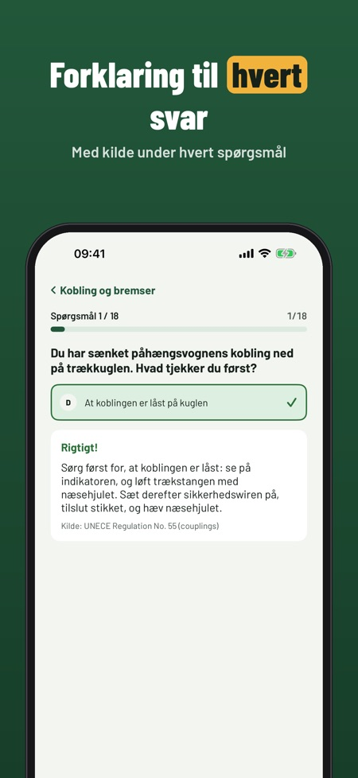
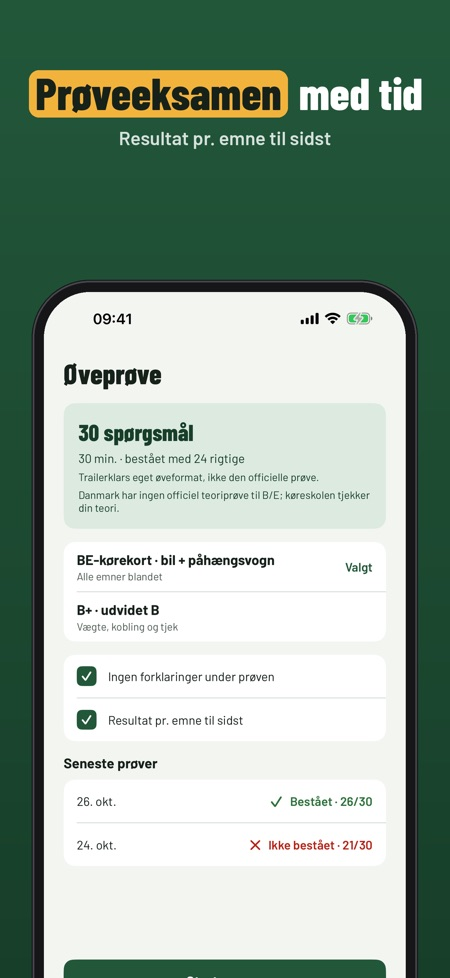

Trailerkort og vægtberegner. Øv teorien til trailerkørekort B/E: spørgsmål med forklaring, prøveeksamen og en beregner, der viser, om du må trække traileren på dit kørekort.



Trailerklar hjælper dig med at øve teorien til kørekort B/E (bil + tung trailer) – og regner ud fra registreringsattesten, om B, B+ eller BE er nok.
Beregneren, ordlisten, tjeklisten og 20 spørgsmål kan bruges uden køb. Den fulde version er et engangskøb, der låser alle spørgsmål, prøveeksamener og statistik op. Intet abonnement.
Trailerklar er uafhængig og ikke tilknyttet Færdselsstyrelsen eller politiet. Beregneren er en øvehjælp – tjek altid registreringsattesten.